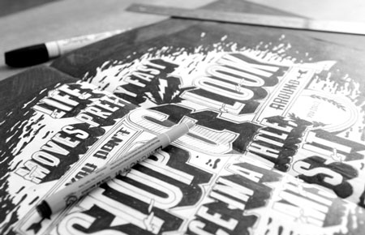
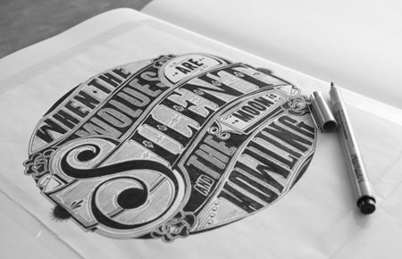

Previous Demo
Back to the Codrops Article
Item Transition Inspiration
Small Component
Full Width
Transparent
Choose an effect...
Corner scale
Vertical scale
Fall
Forward pulse
Rotate pulse
Hearbeat
Coverflow
Rotate me softly
Deal 'em
Ferris wheel
Shinkansen
Snake
Shuffle
Photo Browse
Slide Behind
Vacuum
Hurl it


Previous item
Next item
Images from the Hand Lettering project by
Ben Johnston
If you enjoyed this demo you might also like:
Simple Stack Effects
Medium-Style Page Transition